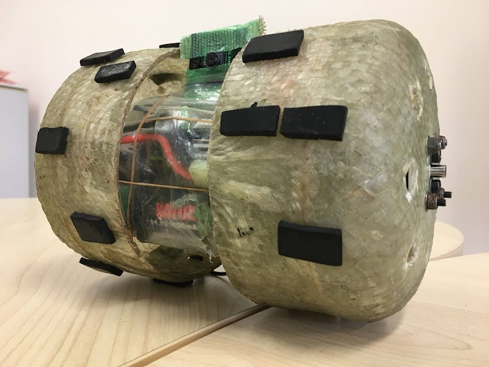
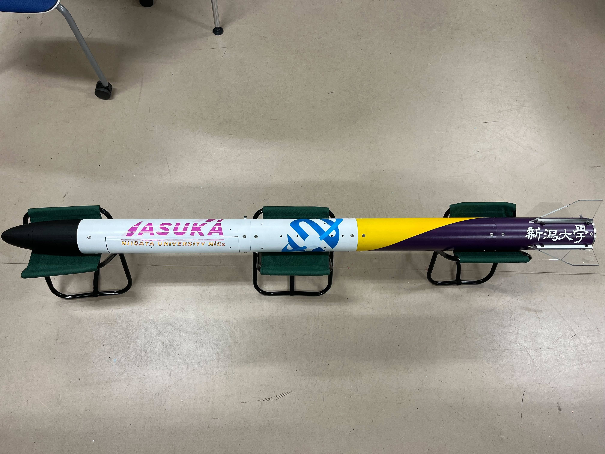

Teams
Steadiness
Steadinessは本プロジェクトでも特に正確な誘導性能を持ち、シングルボードコンピュータであるRaspberryPi4とカメラを用いて目標地点から0m台でのゴール判定が可能な機体を開発した。さらに搭載されている強いモーターと強化繊維プラスチックで作られたタイヤは様々な環境での走破性の向上に貢献している。
開発チーム コメント
SteadinessはCanSatプロジェクトの3年生が製作するランバックです。Steadinessの名前の通り、安定した制御を目標にランバック機体の開発を行っています。カメラで0m目指して頑張ります。
HOTOGI
HOTOGIが製作する機体はパラシュートと機体を切り離す解放機構においてスタビライザーを動作させるという異なる方式を採用している。また、カメラ制御に加えインターネットを介した通信など機械、電装の両方で新しい技術の開発に取り組んでいる。

開発チーム コメント
CanSatプロジェクトの3年生でランバック機体を製作するHOTOGIは様々な部分でこれまでになかった新しいアイデアを取り込んだ機体を開発しています。大会での好成績を目指して頑張ります。
Odyssey
Odysseyは本プロジェクトでも特に走破性に特化しており、障害物の多い路面でも難なく走行することができる。さらに、9軸センサーとGPSによる正確な制御により機体を確実にゴール地点へ導く。
開発チーム コメント
CanSatプロジェクトの2年生でランバック機体を製作するOdysseyは今年度から始まった新しいチームです。手探りで開発を開始し、やっと完成することができました。先輩たち製作した機体を模倣した形ですが、これから私たちの機体へ改良していく予定です！
Alsomitra
Alsomitraは新潟大学CanSatプロジェクトで唯一フライバック機を製作するチームである。デュアルコア搭載のRaspberry Pi Picoを用いており、常に9軸センサーの値を監視しながら制御することで、フライバックの少ない滞空時間でも即座に外乱に反応することを可能にした。
開発チーム コメント
メンバー常時募集中です！飛行機の開発も進めていく予定なので航空系に興味のある方は一緒に新潟で活動しましょう！
Rocket
NiCsのロケット部門ではハイブリッドロケットの開発を行っている。ロケットエンジンには液体燃料と固体燃料を利用し、高度約300mまでの上昇が可能である。昨年初めての打ち上げに成功した。
開発チーム コメント
私たちのロケットが無事に飛ぶかドキドキだが、今までの努力が報われ、みんなの思いをのせ、無事に打ち上げられるように頑張ります。